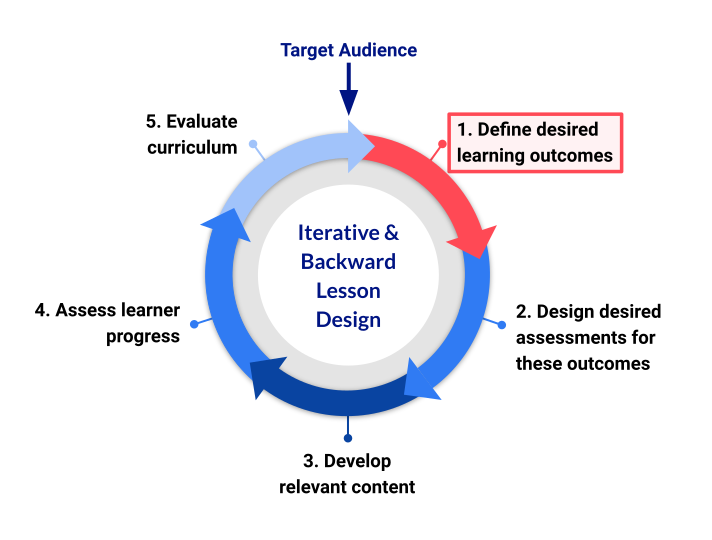

Defining Lesson Objectives/Outcomes
Last updated on 2024-10-17 | Edit this page
Overview
Questions
- How can describing the things you intend to teach aid the process of writing a lesson?
- How can you be specific and realistic about what you will teach in your lesson?
- What are some of the risks associated with unrealistic or undefined expectations of a lesson?
Objectives
After completing this episode, participants should be able to…
- Explain the importance of defining specific, measurable, attainable, relevant and time-bound objectives for a lesson.
- Evaluate a written lesson objective according to these criteria.

At this stage of the training, you should have a clear idea of who the target audience is for your lesson, and what knowledge, skills, and abilities you expect them to arrive with. Now it is time to consider the additional knowledge, skills, and abilities they will have by the time they leave: these are the learning outcomes of your lesson. It can feel strange to jump from one end of the process to the other like this, but clearly defining your goals early in the lesson development process is vital. As we will see in this episode, it helps you to determine the activities, examples, etc. that are appropriate for the lesson content, and provides a scope for what should and should not be included.
Why Focus on Skills?
To ensure your audience stays motivated, and your lesson feels relevant to them, we recommend that lessons focus on teaching skills rather than tools. Lessons should be centred around what you are empowering learners to do, what will be most beneficial to them, rather than a list of functions or commands you are teaching them to use. Placing the emphasis on skills over tools will help you prioritise key concepts and consider how your lesson can have the biggest impact on the way learners do their work.
Learning Objectives
The desired outcomes (the learning objectives) of a lesson should be new skills, i.e. things that the learner can do. For the vast majority of lessons, these will be cognitive skills: things learners can do with their minds. (Lessons intended to teach other kinds of skill, such as woodwork, playing a musical instrument, or making sushi, are probably better suited to a different platform than a static website.) Cognitive skills cannot be equally easily acquired: before we can apply concepts and create something new, we must attain the ability to remember and distinguish between new concepts. Remembering and distinguishing are also abilities that are often faster to gain then applying or creating.
We must try to be realistic about how far along this scale we can move learners during a single workshop/lesson. This is one reason why the target audience is so important: if we can predict what learners will know when they arrive at the lesson, we can better define the outcomes we can expect when they leave.
Defining objectives for a lesson is essential because it allows us to focus the rest of our time on developing content that is necessary for learners to reach these goals. It will help us ensure we do not miss anything important or, conversely, include anything superfluous that could use up valuable time or distract instructors and learners.
What Does an Objective Look Like?
Objectives can be defined for a lesson as a whole - what should learners be able to do at the end of a workshop teaching this lesson? - and for individual sections within it - what should learners be able to do after following this particular part of the lesson?
This is probably a episode-level objective because it is very specific. A corresponding lesson-level objective might be “read data and libaries into the python environment”. It is still fairly specific but a bit broader in scope and contains several episode-level objectives.
The lesson level objective for the current section of this training is: define SMART learning objectives. This objective also covers a later episode as well.
The episode level objectives for the current section of this training are:
Objectives for This Section
- Explain the importance of defining specific, measurable, attainable, relevant and time-bound objectives for a lesson.
- Evaluate a written lesson objective according to these criteria.
These should be read as if they were endings to a sentence beginning
“At the end of this session, learners should be able to …”
Each objective starts with a verb and describes one (and only one) skill the learner will obtain.
For objectives to be as helpful as possible, they need to be written in a way that will allow us to directly observe whether or not a learner has attained the skills we want them to. This means that the skills described by our objectives should be measurable: as a general rule, action verbs such as “explain,” “choose,” or “predict,” are more helpful than passive verbs such as “know,” “understand,” or “appreciate”, which are hard to directly assess and are often open to interpretation.
A popular aid for defining learning objectives is Bloom’s Taxonomy, which divides cognitive skills into several categories. The original taxonomy arranged these categories in a strict hierarchy, which has since been disputed. Regardless of whether these skills conform to such a hierarchy, Bloom’s Taxonomy serves as a very useful bank of action verbs for use in learning objectives. The Committee for Computing Education in Community Colleges has also created a version of Bloom’s Taxonomy customized for computing related training.
We will see how helpful it can be to use action verbs in learning objectives when we begin talking about exercise design in the coming episodes.
SMART Objectives
To assist you in defining and writing learning objectives for your lesson, it can be helpful to turn to a popular framework for defining goals: SMART. Originally proposed to aid managers in the definition of business goals, and updated and adapted since to several other domains including education (see How to Write Well-Defined Learning Objectives for example1), the SMART acronym requires goals to be specific, measurable, attainable, relevant, and time-bound.
In the context of a lesson, SMART objectives should be:
- Specific: they should clearly describe a particular skill or ability the learner should have.
- Measurable: it should be possible to observe and ascertain when the learner has learned the skill/abilities described in the objectives.
- Attainable: the learner should realistically be able to acquire the skills or abilities in the time available in a workshop/by following the text of the lesson.
- Relevant: they should be relevant to the overall topic or domain of the lesson as a whole.
- Time-bound: they should include some timeframe within which the goal will be reached. For learning objectives, this is built into the approach described above.
Note that, for any lesson/curriculum that will be taught in a fixed amount of time, attainable and time-bound are overlapping: learning objectives for your lesson will answer the question “What will learners be able to do by the end of this lesson?” and the time available to teach the lesson, combined with the expected prior knowledge of your target audience, will determine how attainable they are.
Exercise: evaluating learning objectives (15 minutes)
Look at the example learning objectives below. Fill in the table for each objective, checking off the cells if you think an objective meets the criteria or leaving it unchecked if not. You should assume each objective is for a lesson to be taught in a two-day workshop. Note down any observations you make as you move through the list. If you have time, try to imagine the titles of lessons that would have these objectives. This part of the exercise should take 10 minutes.
At the end of this lesson, learners will be able to:
- create formatted page content with Markdown.
- program with Rust.
- fully understand GitHub Actions.
| Objective | Action verb? | Specific | Measurable | Attainable |
|---|---|---|---|---|
| 1 | ||||
| 2 | ||||
| 3 |
In the last five minutes of the exercise, we will discuss as a group how each objective might be improved.
| Objective | Action verb? | Specific | Measurable | Attainable |
|---|---|---|---|---|
| 1 | ✅ | ❓ | ❓ | ✅ |
| 2 | ❓ | ❌ | ❌ | ❓ |
| 3 | ❌ | ❌ | ❌ | ❓ |
Objective 1 is the closest to what we ideally want in a lesson objective, but it illustrates how difficult it can be to make an objective truly specific. For example, a more specific and measurable version of this objective could be:
write links, headings and bold and italicised text with Markdown.
Lesson Scope
One of the major challenges of lesson design is choosing what to include in a lesson: what the main points will be, in what order they will be introduced, how much detail can be provided, and how much time can be spent on each point. Especially when writing lessons for short form training like a Carpentries workshop, difficult decisions often need to be made about what can and cannot be included. Trying to fit too much content into a lesson is counter-productive2, so it is good to avoid the temptation to cram in more content than you have time to cover properly.
Writing learning objectives is a good opportunity to begin thinking about this lesson scope, and can provide assistance when you are faced with a difficult decision about what content to cut out.
For instance, consider the order in which new skills must be acquired. Before learners can begin to acquire “higher-level” cognitive skills to perform creative and analytical tasks, they must first acquire the foundational knowledge and conceptual understanding of the domain. Furthermore, these higher-level skills take longer to acquire so, unless you can expect your target audience to arrive at the lesson with the relevant foundational knowledge and understanding, it is probably unrealistic to aim to have learners completing creative tasks before its end.
As should become clear through activities in the upcoming episodes, lessons can be broadly considered as blocks of content associated with a particular learning objective. This can be helpful when making choices about content to remove, because the task can be considered in the context of taking out whole learning objectives.
Defining Learning Objectives
We have discussed the importance of defining objectives early in the lesson design process, and looked at some examples of objectives written for other lessons. Now it is time to begin defining objectives for your own.
Here are some recommendations to help you get started:
- Aim for 3-4 lesson objectives for every 6 hours your lesson will take to teach. (For example, this curriculum is designed to be taught in ~18 hours and has ten learning objectives.)
- These objectives are for your lesson as a whole: try to define the “end point” knowledge and skills you want learners to acquire. You can think of these as the things you would test in a fictional “final exam” your learners would be able to tackle.
- Later you will write “episode-level” objectives that should define intermediate steps towards the high-level objectives you identify for your lesson here.
Exercise: defining objectives for your lesson (20 minutes)
Write learning objectives for your lesson into the relevant section of your Lesson Design Notes document - what do you want learners to be able to do at the end of the workshop? When writing these lesson-level objectives, try to follow the SMART framework: make them specific, measurable, attainable, relevant, and time-bound.
Take notes about the your discussion in your Lesson Design Notes document. A record of the decisions you made and your reasons for choosing these objectives can be very helpful for you and others to understand the design and scope of the lesson later.
If you find yourself writing very specific episode level objectives, keep them in your notes and try to think of a slightly broader objective that may contain several very specific objectives. We will come back and work more on episode objectives next in the training.
Exercise: reviewing lesson objectives (15 minutes)
Swap objectives written in the previous exercise with a partner (you can also explain or show them what you wrote about your target audience, but this not essential) and review them with the following questions in mind:
- Are the objectives clear?
- Do they use “action” verbs?
- Could you directly observe whether a learner had reached this objective?
Now run the objectives through this Lesson Objective Advisor tool from the University of Manchester’s Faculty of Science and Engineering. Do the results match your assessment?
- Where do the skills described in these objectives sit on the scale?
- (optional) Are these objectives realistic, given the target audience of the lesson?
Advertising your lesson
These learning objectives, as well as the list of prerequisite knowledge you defined earlier, are very useful information to include when advertising a workshop that will teach your lesson. It will help people understand whether or not the event is a good fit for them, and manage their expectations about what they will learn if they attend.
Key Points
- Defining objectives for a lesson can help to focus your content on the most important outcomes, and outline the scope of the project.
- Following the SMART framework can help make your learning objectives as useful as possible.
- Leaving objectives unrealistic or undefined increases the risk of a lesson losing focus or spending time on activities that do not help learners gain the most important skills.